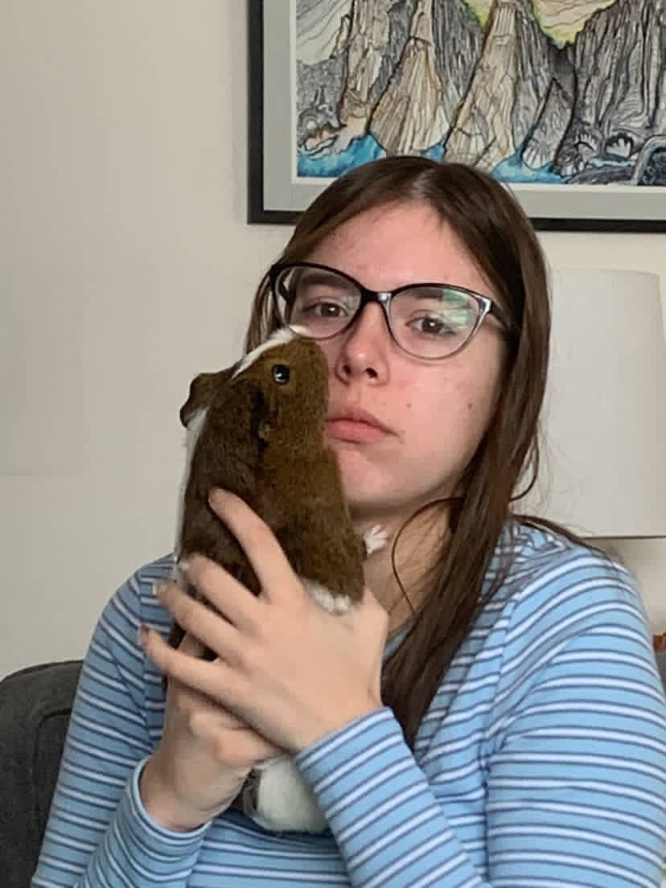
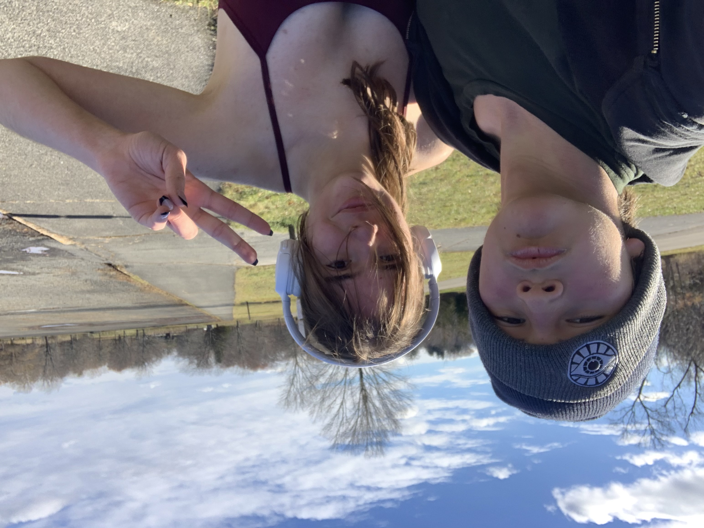
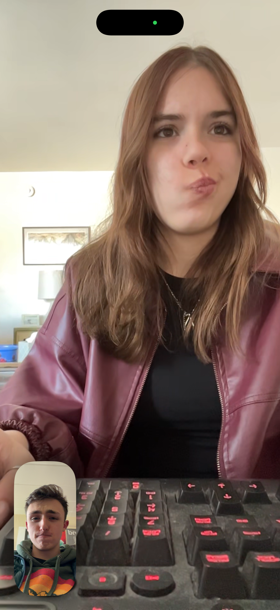
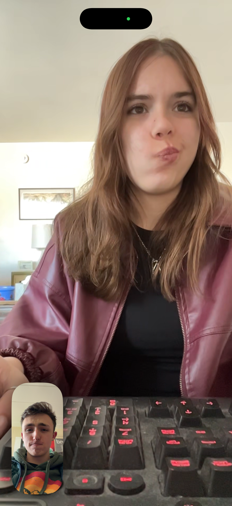
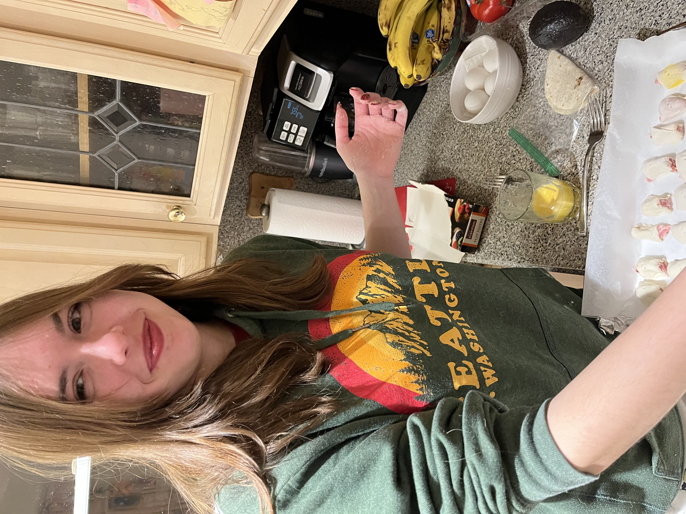

The Diva in Question: her majesty, Daisy Baker
A.K.A.
- Baddie With an Addy
- Cutie With a Booty
- Dean's List Diva
- Proficient Princess
- Qualified Queen
- Benevolent Baby
- Creative Cuddlebug
- Accomplished Angel
Me worshiping at her altar ^
The Diva in Question: her majesty, Daisy Baker
Me worshiping at her altar ^
She is writing a book. I have read a sample firsthand, and can confidentally confirm this will make the bestseller's list.

She has a pet Guinea Pig, Linny. Linny is very protective. Linny is not fat.
She is a Master Athlete. She is a runs (sometimes her brother comes too). In her spare time, she hones her acrobatic skills.

Gamer Extraordinaire. She might look cute, but no Sim is safe. This is a kill or be killed world.
Watch out buddy. She'll remove all the beds.
 

She is a culinary artist. Even Gordon Ramsay would approve. Those sausage rolls ARE NOT going to make themselves.
As of November 3rd, 2025, she has a BOYFRIEND who absolutely Loves Her. #PowerCouple #GomezAndMorticia #Yearner #LimesAndPeaches